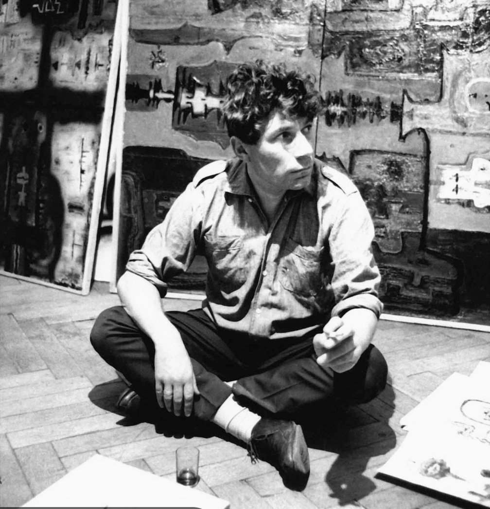
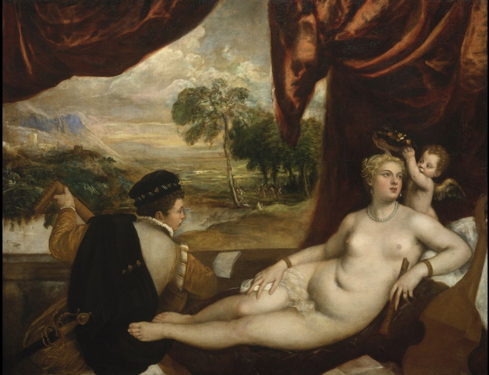

“Ways of Seeing” by John Berger explores the significance of images, primarily European oil paintings, and how they impact viewing culture. Each episode discusses something new such as the production and advertisement of the art to the political meaning of the artwork. Berger challenges viewers to look deeper into the meaning and story of the artwork and uses history to connect us back to the relevance of the art in our current time. After watching this series, I was surprised at how it is still very relatable in our day and age. The topics that are discussed are topics that are still being debated.
 The video that I enjoyed the most was episode 2. This episode focuses on how European oil paintings were used to demonstrate power and status in Western society, primarily against women. Many of the paintings that were included in this video included nude women and that was vital to the conversation. A line that I feel summarizes this video nicely is this:
“To be naked is to be seen by oneself. To be nude is to be seen by others.”
I rarely thought about the reasons why women were made out to be nude in these oil paintings but finding out that it is due to having control of power started to make things click. In art, nudity is meant to be a sight for those who are clothed, yet those who are clothed are the men who sometimes appear in these paintings. Women's bodies are subjected to the viewing pleasure of their male counterparts and this suggests the belief that women are objects in the eyes of men. Often gawking at the bodies of the naked women, male figures linger across the canvas of the painting. It is also common for female figures to be seen looking off past the frame as well as being at rest. Berger says that female figures in these paintings are rarely moving around because they are meant to portray this submissive image adhering to the male gaze. This gaze can be from the men in the paintings or the gaze of the audience looking at the painting.